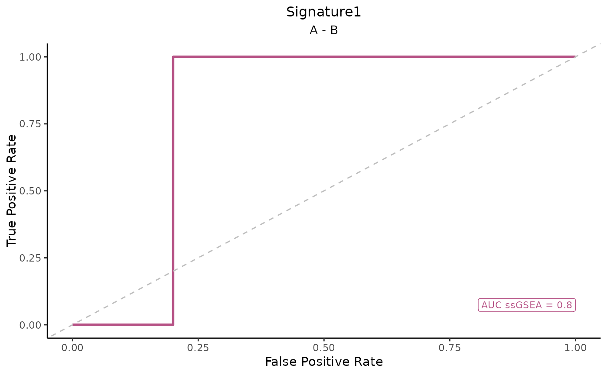

This function generates ROC curve plots for different gene signatures across multiple scoring methods.
Usage
ROC_Scores(
data,
metadata,
gene_sets,
method = c("logmedian", "ssGSEA", "ranking", "all"),
variable,
colors = c(logmedian = "#3E5587", ssGSEA = "#B65285", ranking = "#B68C52"),
grid = TRUE,
spacing_annotation = 0.3,
ncol = NULL,
nrow = NULL,
mode = c("simple", "medium", "extensive"),
widthTitle = 18,
title = NULL,
titlesize = 12
)Arguments
- data
A matrix or data frame of gene expression data.
- metadata
A data frame containing sample metadata.
- gene_sets
A named list of gene sets.
- method
A character string specifying the scoring method(s) (
"logmedian","ssGSEA","ranking", or"all").- variable
A character string specifying the categorical variable for group comparisons.
- colors
A named vector specifying colors for each method. Only one color is allowed, if method != "all". Default colors are
c(logmedian = "#3E5587", ssGSEA = "#B65285", ranking = "#B68C52").- grid
Logical; if
TRUE, arranges plots in a grid.- spacing_annotation
numeric value specifying the spacing between labels of AUC values. Default is 0.3.
- ncol
Optional numeric value specifying the number of columns in the grid layout for the combined plots. If
NULL, there will be as many columns as contrasts. If this number is 1, then a near-square grid is computed.- nrow
Optional numeric value specifying the number of rows in the grid layout. If
NULL, there will be as many columns as gene sets. If this number is 1, then a near-square grid is computed.- widthTitle
Optional integer specifying the maximum width of the title before inserting line breaks. Titles break at
_,-, or:where possible, or at the exact width if no such character is found. Default is18.- title
Title for the grid of plots.
- titlesize
An integer specifying the text size for each of the heatmap titles. Default is 12.
- modeA
string specifying the level of detail for contrasts. Options are:
"simple": Performs the minimal number of pairwise comparisons between individual group levels (e.g., A - B, A - C). Default."medium": Includes comparisons between one group and the union of all other groups (e.g., A - (B + C + D)), enabling broader contrasts beyond simple pairs."extensive": Allows for all possible algebraic combinations of group levels (e.g., (A + B) - (C + D)), supporting flexible and complex contrast definitions.
Examples
# Example data
data <- as.data.frame(abs(matrix(rnorm(1000), ncol = 10)))
rownames(data) <- paste0("Gene", 1:100) # Name columns as Gene1, Gene2, ..., Gene10
colnames(data) <- paste0("Sample", 1:10) # Name rows as Sample1, Sample2, ..., Sample100
# Metadata with sample ID and condition
metadata <- data.frame(
SampleID = colnames(data), # Sample ID matches the colnames of the data
Condition = rep(c("A", "B"), each = 5) # Two conditions (A and B)
)
# Example gene set
gene_sets <- list(Signature1 = c("Gene1", "Gene2", "Gene3")) # Example gene set
# Call ROC_Scores function
ROC_Scores(data, metadata, gene_sets, method = "ssGSEA", variable = "Condition")
#> Considering unidirectional gene signature mode for signature Signature1
#> No id variables; using all as measure variables
